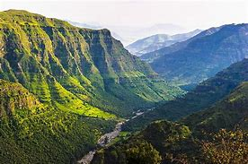

Landscape & national parks

Positioned on the border between Ethiopia and Eritrea is the Danakil Depression. It’s oicially one of driest and hottest places on Earth.
With temperatures that oen reach 50+ degrees, it’s easy to see why. This is a surreal piece of real estate that’s strewn with active volcanoes, salted basins, hot springs, and a lava lake – all of which combine to create a very lunar-like landscape.
Sitting below sea level, it’s the lowest point in Africa and second in the world (aer the Dead Sea).
Do a bit of planning before you go as the climate can be harsh if you aren’t prepared. But the beauty and mystery of this place make any pr
eparation well worth it.
Details